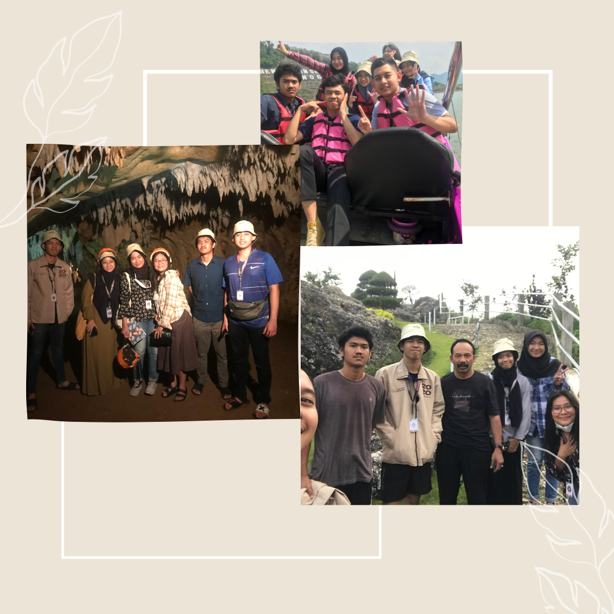
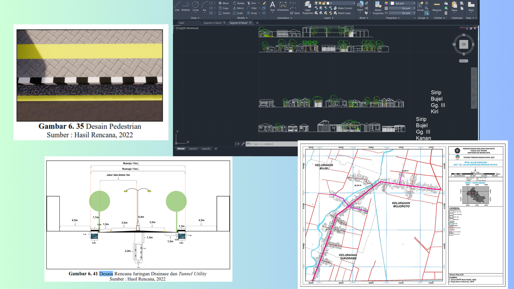
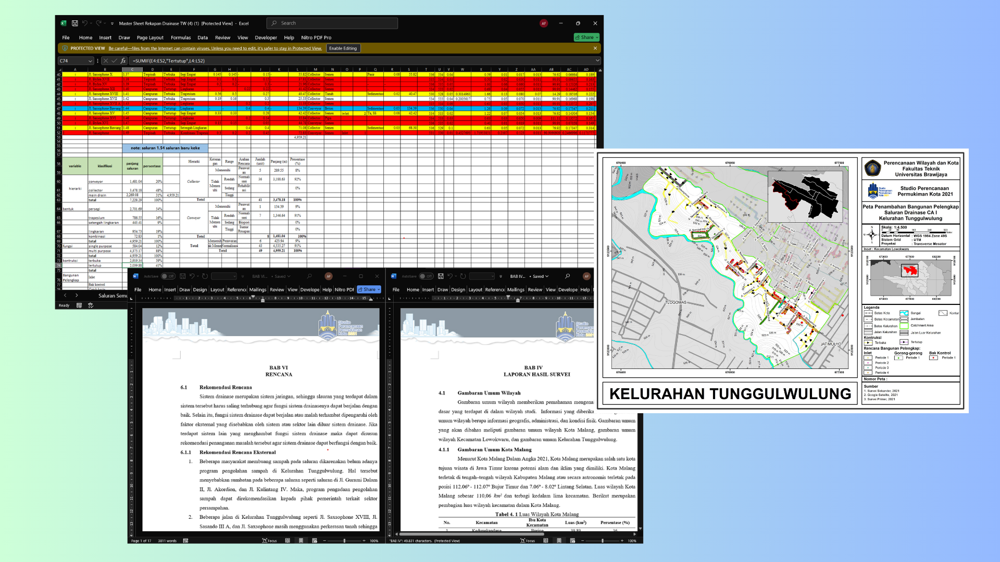

Studio Perencanaan Wilayah

Studio ini berfokus pada penyusunan rencana strategis wilayah berbasis sektor yang kemudian diintegrasikan untuk menghasilkan konsep pengembangan kawasan yang komprehensif. Dalam proyek ini saya melaksanakan lebih dari 150 jam survei lapangan, termasuk wawancara dengan penduduk lokal, pengelola pariwisata, pemilik usaha, dan instansi pemerintah. Berdasarkan data tersebut, saya melakukan 5+ jenis analisis untuk menyusun konsep pengembangan kawasan serta berperan dalam penyusunan dan presentasi laporan akhir di hadapan dosen pembimbing dan pemangku kepentingan lokal.
Studio Perancangan Kota

Pada Studio Perancangan Kota, saya terlibat dalam penyusunan dokumen RTBL mulai dari survei lapangan hingga perancangan kawasan. Saya melaksanakan lebih dari 160 jam survei lapangan yang difokuskan pada analisis lalu lintas dan karakteristik fisik bangunan. Berdasarkan hasil survei tersebut, saya menyusun lebih dari lima peta tematik dan analisis spasial untuk mendukung perencanaan kawasan exit tol serta terlibat dalam perancangan landmark, streetscape koridor jalan, dan desain pedestrian menggunakan AutoCAD dan SketchUp.
Studio Perencanaan Permukiman Kota

Pada studio ini saya mempelajari proses survei lapangan, pengolahan data, serta penyusunan laporan perencanaan secara sistematis. Saya bertanggung jawab mengelola master data menggunakan Excel dan Word, memanfaatkan rumus seperti SUMIF dan Pivot Table untuk pengolahan data, serta terlibat dalam pembuatan peta dan analisis spasial menggunakan ArcGIS.